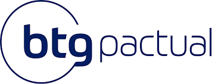
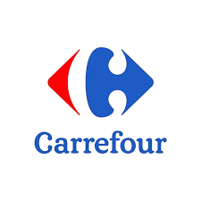
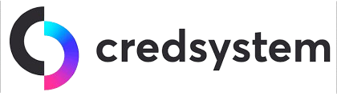
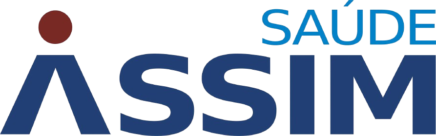
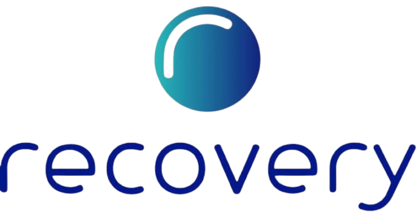

Nathália França
Criando o futuro da experiência digital. Crafting the future of digital experience.
Especialista em IA aplicada e design conversacional, criando soluções que tornam sistemas complexos mais inteligentes e humanos. ✨ Applied AI specialist and conversational designer, creating solutions that make complex systems smarter and more human. ✨
Trusted by Global Operations





Project_01
CogniPrep
IA para preparação profissional e empregabilidade. AI for career prep and employability.
Detalhes / DetailsProject_02
Ben.IA
Educação inclusiva para alfabetização no autismo. Inclusive education for autism literacy.
Detalhes / DetailsProject_03
Oráculo de Services
Enablement interno e mentoria técnica via IA. Internal AI enablement and knowledge scaling.
Detalhes / DetailsAI Specialist &
Prompt Engineer
Especialista em IA aplicada, design de agentes e automação inteligente. Atuo criando soluções que conectam estratégia, experiência e eficiência operacional. Expert in applied AI, agent design, and intelligent automation. I create solutions that connect strategy, experience, and operational efficiency.
Toolbox

")
")

Deployed
Core_Focus // 100%
AI/UX Research
MAX
Low-Code Automation
MAX
Conversational Design
MAX
Recomendação · LinkedInLinkedIn Recommendation
"Trabalhar com a Nath é ter a certeza de que o projeto estará em mãos experientes e comprometidas com excelência. Domina com segurança IA aplicada e design de experiências conversacionais — estratégia, clareza e execução de alto nível, sempre com foco em resultado e impacto real. Trabalhar com ela não é só uma ótima experiência, é uma vantagem competitiva."
Gabriel Nascimento Ferreira
Data Science · AI · Prompt Engineer · LLMs Specialist
Recomendação · LinkedInLinkedIn Recommendation
"Trabalhar com a Nath é uma daquelas experiências que a gente quer repetir pra sempre. Domina como poucos o trabalho com Inteligência Artificial aplicada e entrega soluções com assertividade, visão estratégica e profundidade técnica. Nath é o tipo de profissional que faz a diferença, e que a gente quer por perto em qualquer desafio."
Eloiza Sprícido
Especialista em IA Conversacional · Arquitetura de Agentes · CX
Feedbacks recebidosWhat people are saying
O que dizem por aí. 💬Real words, real people. 💬
"Você é uma prefeita, xará! Parabéns, amei a proposta e estava precisando muito disso 💜"
UX/UI Designer · @SouJunior"Já perdi as contas de quantos 'optamos por seguir com outro perfil' recebi... Ver alguém transformar essa frustração em uma solução real é inspirador. Parabéns pelo CogniPrep!"
Web Developer · Front-End"Caracaaaa!! Genial 👏 Já vou usar, tô precisando! Obrigada por compartilhar, tenho certeza que vai ajudar muitas pessoas 💜"
Análise e Desenvolvimento de Sistemas"NECESSÁRIO! Eu recebi tantos e-mails como esse que cheguei a pensar em abrir mão da área. Que conteúdo incrível, eu precisava disso 😅"
UX/UI Designer · Marketing Digital"Caramba, essa ferramenta vai me salvar em tanta coisa..."
Desenvolvedora Web Júnior · Full-Stack"Que incrível!! Já vou usar por aqui para me preparar para os processos seletivos."
Analista de Marketing · Eventos & AnáliseMedium.
Artigos técnicos e pesquisas sobre engenharia de prompts, automação inteligente e UX. Technical articles and research on prompt engineering, intelligent automation, and UX.